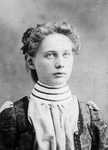

Martha Adriansdatter
K, #68801, f. før 1692
Biografi
| Sist redigert |
16 november 2012 00:00:00 |
| Slektskap | 6. tippoldemor til Håkon Wahl |
Ole Johannessen
M, #68802, f. før 1803
Biografi
Ole Johannessen ble født før 1803.
| Sist redigert |
17 november 2012 00:00:00 |
Thomas Henrik Aarøe
M, #68803, f. omtrent 1682
Foreldre
Biografi
Thomas Henrik Aarøe ble født omtrent 1682.
| Sist redigert |
2 desember 2014 00:00:00 |
| Slektskap | Bror av 6.tippoldefar/mor til Håkon Wahl |
Jens Bernhoft Aarøe
M, #68804, f. omtrent 1692
Foreldre
Biografi
Jens Bernhoft Aarøe ble født omtrent 1692.
Jens Bernhoft Aarøe. gikk på skole på/i Trondheim, Sør-Trøndelag.
| Sist redigert |
17 november 2012 00:00:00 |
| Slektskap | Bror av 6.tippoldefar/mor til Håkon Wahl |
Anders Aarøe
M, #68805, f. omtrent 1694
Foreldre
Biografi
Anders Aarøe ble født omtrent 1694.
| Sist redigert |
27 februar 2021 00:00:00 |
| Slektskap | Bror av 6.tippoldefar/mor til Håkon Wahl |
Hannah Rebecca Wahl
K, #68806, f. 21 september 1884, d. 12 august 1923
Foreldre
Familie: Hans Kristian Ramstad (f. 19 januar 1877, d. 17 februar 1927)
| Sønn | Norman Ramstad+ (f. 17 juli 1904, d. 28 januar 2003) |
| Sønn | Oscar Alvin Ramstad+ (f. 16 oktober 1905, d. 26 april 2009) |
| Datter | Hilda Christine Ramstad+ (f. 9 mars 1908, d. 8 mai 1932) |
| Sønn | Harold Ingolf Ramstad+ (f. 26 januar 1910, d. 22 september 1979) |
| Sønn | Howard Ramstad+ (f. 8 juli 1912, d. februar 1978) |
| Datter | Beulah Signe Ramstad+ (f. 15 februar 1914, d. 11 desember 2000) |
| Sønn | Ernest Arnold Ramstad+ (f. 22 mars 1916, d. 22 desember 2000) |
| Datter | Esther Theresa Ramstad+ (f. 11 april 1918, d. 19 august 2001) |
| Sønn | Loyd Rudolp Ramstad+ (f. 21 mars 1920, d. 20 januar 2010) |
| Sønn | Clarence Odean Ramstad+ (f. 29 april 1922, d. 20 juni 2001) |

hannah wahl ramstad
Biografi
Hannah Rebecca Wahl ble født den 21 september 1884 Lincoln County, South Dakota, USA. Hun giftet seg med
Hans Kristian Ramstad. Hun døde den 12 august 1923 på/i Lincoln County, South Dakota, USA. Hun ble gravlagt på/i Canton Lutheran Cemtery, Canton, Lincoln County, South Dakota, USA.
Hannah Rebecca Wahl was also known as Hannah Rebecca Ramstad.
| Sist redigert |
23 juni 2026 21:45:55 |
| Slektskap | 3-menning 2 ganger forskjøvet til Håkon Wahl |
Ingebrigt Torstensen
M, #68811, f. omtrent 1797, d. 29 mars 1857
Foreldre
Biografi
Ingebrigt Torstensen ble født omtrent 1797 Beitstad, Steinkjer, Nord-Trøndelag. Han giftet seg med
Peternille Sevaldsdatter den 9 februar 1851. Han døde den 29 mars 1857 på/i Klinga, Namsos, Nord-Trøndelag.
| Sist redigert |
11 januar 2014 00:00:00 |
Albert Fredrik Wahl
M, #68812, f. 1 januar 1886, d. 2 april 1889
Foreldre
Biografi
Albert Fredrik Wahl ble født den 1 januar 1886 USA. Han døde den 2 april 1889 på/i USA.
| Sist redigert |
20 november 2012 00:00:00 |
| Slektskap | 3-menning 2 ganger forskjøvet til Håkon Wahl |
Cora Victoria Wahl
K, #68813, f. 24 september 1888, d. 29 april 1889
Foreldre
Biografi
Cora Victoria Wahl ble født den 24 september 1888 USA. Hun døde den 29 april 1889 på/i USA.
| Sist redigert |
20 november 2012 00:00:00 |
| Slektskap | 3-menning 2 ganger forskjøvet til Håkon Wahl |
Clara Sophie Wahl
K, #68814, f. 21 mai 1904, d. desember 1990
Foreldre
| Sønn | Daryle V. O'Connor |
| Sønn | Keith J. O'Connor |
Biografi
Clara Sophie Wahl ble født den 21 mai 1904 South Dakota, USA. Hun giftet seg med
Edward T. O'Connor. Hun døde i desember 1990.
Clara Sophie Wahl was also known as Clara Sophie O'Connor. Hun bodde på/i La Valley, Lincoln County, South Dakota, USA.
| Sist redigert |
23 juni 2026 21:45:55 |
| Slektskap | 3-menning 2 ganger forskjøvet til Håkon Wahl |
Cora Victoria Wahl
K, #68815, f. 10 mars 1894, d. 25 august 1980
Foreldre
Biografi
Cora Victoria Wahl ble født den 10 mars 1894 South Dakota, USA. Hun giftet seg med
Adolf Leonhard Johansen den 6 juli 1921. Hun døde den 25 august 1980 på/i South Dakota, USA.
Cora Victoria Wahl was also known as Cora Victoria Johnson.
| Sist redigert |
25 januar 2020 00:00:00 |
| Slektskap | 3-menning 2 ganger forskjøvet til Håkon Wahl |
Adryce Corrine Johnson
K, #68817, f. 6 juli 1925, d. 28 august 1933
Foreldre
Biografi
Adryce Corrine Johnson ble født den 6 juli 1925 USA. Hun døde den 28 august 1933. Hun ble gravlagt på/i Forest Hill Cemetery, Canton, Lincoln County, South Dakota, USA.
| Sist redigert |
23 juni 2026 21:32:51 |
| Slektskap | 4-menning 1 gang forskjøvet til Håkon Wahl |
Pearl Julia Wahl
K, #68818, f. 6 september 1892, d. 2 desember 1947
Foreldre
Biografi
Pearl Julia Wahl ble født den 6 september 1892 South Dakota, USA. Hun giftet seg med
Paul Martinus Juel den 29 juni 1910 på/i Worthing, South Dakota, USA. Hun døde den 2 desember 1947 på/i Lincoln County, South Dakota, USA. Hun ble gravlagt på/i Canton Lutheran Cemtery, Canton, Lincoln County, South Dakota, USA.
Pearl Julia Wahl was also known as Pearl Julia Juel.
| Sist redigert |
23 juni 2026 21:45:55 |
| Slektskap | 3-menning 2 ganger forskjøvet til Håkon Wahl |
Paul Martinus Juel
M, #68819, f. 29 september 1884, d. 17 november 1951
Foreldre
Biografi
Paul Martinus Juel ble født den 29 september 1884 Lincoln County, South Dakota, USA. Han giftet seg med
Pearl Julia Wahl den 29 juni 1910 på/i Worthing, South Dakota, USA. Han døde den 17 november 1951 på/i Lincoln County, South Dakota, USA. Han ble gravlagt på/i Canton Lutheran Cemtery, Canton, Lincoln County, South Dakota, USA.
Paul Martinus Juel ble født den 8 november 1884.
| Sist redigert |
23 juni 2026 21:45:55 |
Agnes Christine Juel
K, #68820, f. 28 mars 1918, d. 2 juni 2014
Foreldre
Biografi
Agnes Christine Juel ble født den 28 mars 1918 Canton, Lincoln County, South Dakota, USA. Hun giftet seg med
Russel K Twedt den 18 juli 1947 på/i Canton, Lincoln County, South Dakota, USA. Hun døde den 2 juni 2014 på/i Larchwood, Lyon County, Iowa, USA. Hun ble gravlagt på/i Our Saviors Lutheran Church Cemetery, Inwood, Lyon County, Iowa, USA.
Agnes Christine Juel was also known as Twedt.
| Sist redigert |
23 juni 2026 21:36:22 |
| Slektskap | 4-menning 1 gang forskjøvet til Håkon Wahl |
Evelyn Juel
K, #68822, f. 1914
Foreldre
Biografi
Evelyn Juel ble født i 1914 Lincoln County, South Dakota, USA.
| Sist redigert |
23 juni 2026 21:45:55 |
| Slektskap | 4-menning 1 gang forskjøvet til Håkon Wahl |
John Edgar Juel
M, #68823, f. 12 april 1920, d. 21 august 2001
Foreldre
Biografi
John Edgar Juel ble født den 12 april 1920 Lincoln County, South Dakota, USA. Han giftet seg med
Evelyn Mildred Carlson den 25 februar 1945 på/i Canton, Lincoln County, South Dakota, USA. Han døde den 21 august 2001 på/i Sioux Falls, Minnehaha County, South Dakota, USA.
| Sist redigert |
23 juni 2026 21:45:55 |
| Slektskap | 4-menning 1 gang forskjøvet til Håkon Wahl |
Palma Juel
K, #68824, f. 1917
Foreldre
Biografi
Palma Juel ble født i 1917 Lincoln County, South Dakota, USA.
| Sist redigert |
23 juni 2026 21:45:55 |
| Slektskap | 4-menning 1 gang forskjøvet til Håkon Wahl |
Perry Juel
M, #68825, f. 10 desember 1924, d. 27 mai 2016
Foreldre
Biografi
Perry Juel ble født den 10 desember 1924 Lincoln County, South Dakota, USA. Han giftet seg med
Thelma Stadum den 4 juni 1950. Han døde den 27 mai 2016 på/i Ellenton, Manatee County, Florida, USA. Han ble gravlagt på/i Canton Lutheran Cemtery, Canton, Lincoln County, South Dakota, USA.
He attended school in Canton, graduating in 1943. Perry served in the US Navy during WWII. Following his discharge, he attended Chillicothe Business College in Chillicothe, MO.
He was a partner with his brother-in-law at Stadum Construction in Sioux Falls for many years. Lived in Sioux Falls until 1979, when they moved to Florida.
| Sist redigert |
23 juni 2026 21:51:45 |
| Slektskap | 4-menning 1 gang forskjøvet til Håkon Wahl |
{kind=link}